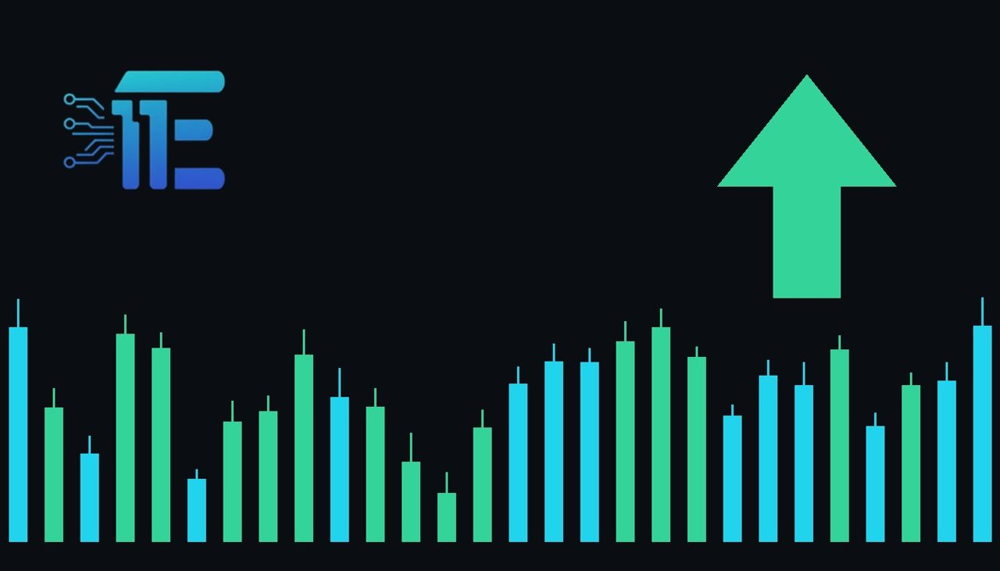

Gold Mining Stocks Surge as US Midterm Results Weaken Dollarភាគហ៊ុនអعدមាស זינק послеសន្លឹកឆ្នោតទន់ខ្សោយរបស់ដុល្លារ
XAU/USD impact: ▲ Bullishផលប៉ះពាល់លើ XAU/USD: ▲ ឡើង

US-listed gold mining shares advanced sharply as bullion prices climbed following the Democratic Party's victory in both chambers of Congress. This political shift weakened the US dollar and lifted precious metal values.
ភាគហ៊ុនក្រុមហ៊ុនរុករករ៉ែមាសដែលបានចុះបញ្ជីនៅសហរដ្ឋអាមេរិកបានកើនឡើងយ៉ាងខ្លាំងដោយសារតម្លៃមាសបានកើនឡើងបន្ទាប់ពីជ័យជម្នះរបស់គណបក្សប្រជាធិបតេយ្យ។ ការផ្លាស់ប្តូរនយោបាយនេះបានធ្វើឱ្យដុល្លារអាមេរិកខ្សោយចុះនិងជំរុញតម្លៃលោហៈមានតម្លៃ។
US-listed gold mining stocks advanced sharply in premarket trading on Wednesday as gold prices climbed following the Democratic Party’s victory in both chambers of Congress during the US midterm elections. Spot gold rose alongside these mining equities, reflecting heightened market activity tied to the unexpected congressional outcome.
ភាគហ៊ុនក្រុមហ៊ុនរុករករ៉ែមាសដែលបានចុះបញ្ជីនៅសហរដ្ឋអាមេរិកបានកើនឡើងយ៉ាងខ្លាំងក្នុងអំឡុងពេលជួញដូរមុនទីផ្សារបើកកាលពីថ្ងៃពុធ ខណៈដែលតម្លៃមាសបានកើនឡើងបន្ទាប់ពីជ័យជម្នះរបស់គណបក្សប្រជាធិបតេយ្យក្នុងសភាទាំងពីរក្នុងអំឡុងពេលបោះឆ្នោតកណ្តាលអាណត្តិនៅសហរដ្ឋអាមេរិក។ តម្លៃមាសស្ប៉តបានកើនឡើងស្របពេលជាមួយនឹងភាគហ៊ុនរុករករ៉ែមាសទាំងនេះ ដែលបង្ហាញពីសកម្មភាពទីផ្សារកើនឡើងដែលទាក់ទងនឹងលទ្ធផលរដ្ឋសភាដែលមិនបានរំពឹងទុក។
The transmission channel to XAU/USD operates primarily through the US dollar and shifting political dynamics. A divided or newly shifted legislative landscape can alter fiscal expectations, weighing on the US dollar and US Treasury yields. Lower yields and a softer greenback reduce the opportunity cost of holding non-yielding bullion, enhancing its attractiveness as an alternative asset.
ច្រកបញ្ជូនទៅកាន់ XAU/USD ដំណើរការជាចម្បងតាមរយៈដុល្លារអាមេរិក និងថាមវន្តនយោបាយដែលកំពុងផ្លាស់ប្តូរ។ ទេសភាពនីតិបញ្ញត្តិដែលបានបែងចែក ឬផ្លាស់ប្តូរថ្មីអាចផ្លាស់ប្តូរការរំពឹងទុកសារពើពន្ធ ដែលធ្វើឱ្យទម្ងន់ធ្លាក់លើដុល្លារអាមេរិក និងអត្រាការប្រាក់រតនាគារសហរដ្ឋអាមេរិក។ អត្រាការប្រាក់ទាប និងប្រាក់ដុល្លារទន់ជាងមុនកាត់បន្ថយការចំណាយឱកាសនៃការកាន់កាប់មាស និងបង្កើនភាពទាក់ទាញរបស់វាជាទ្រព្យសកម្មជំនួស។
From a balanced perspective, a weaker US dollar and lower yields typically support higher gold valuations by increasing demand from foreign currency holders. Conversely, if subsequent economic data or policy reactions prompt a sudden rebound in the currency or rising yields, upward momentum in precious metals could face pressure.
ពីទស្សនៈមានតុល្យភាព ដុល្លារអាមេរិកខ្សោយជាង និងអត្រាការប្រាក់ទាបជាទូះទៅគាំទ្រការវាយតម្លៃមាសខ្ពស់ជាងមុនដោយការបង្កើនតម្រូវការពីអ្នកកាន់រូបិយប័ណ្ណបរទេស។ ផ្ទុយទៅវិញ ប្រសិនបើទិន្នន័យសេដ្ឋកិច្ចជាបន្តបន្ទាប់ ឬប្រតិកម្មគោលនយោបាយជំរុញឱ្យមានការងើបឡើងវិញភ្លាមៗនៃរូបិយប័ណ្ណ ឬការកើនឡើងអត្រាការប្រាក់ សន្ទុះច្របូកច្របល់ឡើងលើនៃលោហៈមានតម្លៃអាចនឹងប្រឈមមុខនឹងសម្ពាធ។
Traders monitoring XAU/USD should watch for ongoing reactions in the US dollar index, Treasury yield movements, and any further legislative or executive commentary regarding the new congressional majority and upcoming fiscal policies.
អ្នកជួញដូរដែលតាមដាន XAU/USD គួរតែពាក់ព័ន្ធនឹងប្រតិកម្មបន្តបន្ទាប់នៅក្នុងសន្ទស្សន៍ដុល្លារអាមេរិក ការផ្លាស់ប្តូរអត្រាការប្រាក់រតនាគារ និងមតិយោបល់នីតិបញ្ញត្តិ ឬនាយកប្រតិបត្តិបន្ថែមទៀតទាក់ទងនឹង និងគោលនយោបាយសារពើពន្ធនាពេលខាងមុខ។
Key takeawaysចំណុចសំខាន់ៗ
- Democratic victories in both congressional chambers impacted the US dollar and US yields.
- ជ័យជម្នះរបស់គណបក្សប្រជាធិបតេយ្យក្នុងសភាទាំងពីរបានប៉ះពាល់ដល់ដុល្លារអាមេរិក និងអត្រាការប្រាក់សហរដ្ឋអាមេរិក។
- Gold mining stocks and spot bullion advanced following the election results.
- ភាគហ៊ុនរុករករ៉ែមាស និងតម្លៃមាសបានកើនឡើងបន្ទាប់ពីលទ្ធផលបោះឆ្នោត។
- Traders are watching currency shifts and Treasury yields for further direction.
- អ្នកជួញដូរកំពុងតាមដានការផ្លាស់ប្តូររូបិយប័ណ្ណ និងអត្រាការប្រាក់រតនាគារសម្រាប់ទិសដៅបន្ថែមទៀត។
Original commentary by THE MARKET CODE, based on public reporting from Yahoo! Finance: GC=F News. Written with the help of AI. Educational only, not financial advice.
មតិវិភាគដើមដោយ THE MARKET CODE ផ្អែកលើការរាយការណ៍សាធារណៈពី Yahoo! Finance: GC=F News។ សរសេរដោយមានជំនួយពី AI។ មាតិកាអប់រំប៉ុណ្ណោះ មិនមែនជាដំបូន្មានហិរញ្ញវត្ថុទេ។